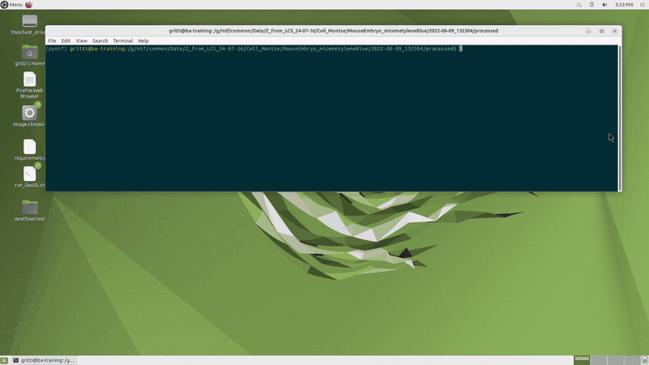

PyMIF — microscopy I/O, OME-Zarr conversion, and NGFF utilities


PyMIF is a Python package for reading microscopy datasets from multiple acquisition systems, building multiscale pyramids, writing OME-NGFF / OME-Zarr, and working with those datasets from Python, the command line and napari.
It is developed for users of the Mesoscopic Imaging Facility (MIF). The rendered documentation is at embl-mif.github.io/pymif.
[!NOTE] PyMIF writes NGFF v0.5 / Zarr v3 by default. NGFF v0.4 / Zarr v2 datasets remain supported through
ZarrManagerandZarrV04Manager.

Demonstration of PyMIF usage. Data: near newborn mouse embryo (~1.5 cm long). Fluorescence signal: methylene blue + autofluorescence. Sample processed and imaged by Montserrat Coll at the Mesoscopic Imaging Facility. Video speed: 2.5× real speed.
What PyMIF does
Microscope managers read Luxendo, Opera, SCAPE, Viventis, Zeiss and OME-Zarr datasets into one lazy (Dask) API with a shared metadata schema. → Readers and conventions
OME-Zarr writing: full export, empty datasets and groups, image and label region updates, any subset of the
tczyxaxes. → Python APIPyramids and subsetting: multiscale generation, cropping, channel reordering, metadata updates. → Python API
Mosaics: raw tiles shown at their stage position and fused into one OME-Zarr image (3D or projection). → Mosaics
Chromatic shift correction: the Z offset between channels measured on the sample itself, and a corrected copy with the same layout as the input. → Chromatic shift correction
Command line: one-off and CSV-batch conversion, mosaic fusion and chromatic shift correction. → Command line
Napari widgets: conversion with ROI selection, mosaic fusion. → Napari plugin
Output tuning: sharding, singleton axes, parallel writing, progress bars. → Advanced writing options
Installation
conda create -n pymif python=3.12
conda activate pymif
git clone https://github.com/embl-mif/pymif.git
cd pymif
pip install . # or: pip install -e .[napari] for development with the napari widgets
Versioning, releases and development installs: Installation and versioning.
Quick start
import pymif.microscope_manager as mm
source = mm.ViventisManager("path/to/Position_1") # any microscope manager
source.build_pyramid(num_levels=3)
source.to_zarr("output.zarr") # NGFF v0.5 / Zarr v3
z = mm.ZarrManager("output.zarr")
z.visualize() # open in napari
pymif convert -i INPUT_PATH -m MICROSCOPE -z OUTPUT_ZARR
pymif fuse -i ACQUISITION_FOLDER -z OUTPUT_ZARR -rds 4 8 8 # fuse raw tiles
pymif chromatic-shift -i INPUT_ZARR -z OUTPUT_ZARR -r shift.json # align channels in Z
Documentation
Getting started
Page |
Contents |
|---|---|
environments, extras, release labels |
|
supported microscopes, shared reader behaviour, logging |
Working with data
Page |
Contents |
|---|---|
export, empty datasets, axis-aware metadata, labels, region writes |
|
raw tiles, placement check, fusion options |
|
measuring the Z offset between channels, the corrected dataset, checking the result, |
|
sharding, singleton axes, parallel writing, progress bar |
Interfaces
Page |
Contents |
|---|---|
|
|
converter and mosaic fusion widgets |
Reference
Page |
Contents |
|---|---|
generated from the docstrings |
|
package layout, adding a microscope manager or a mosaic manager, |